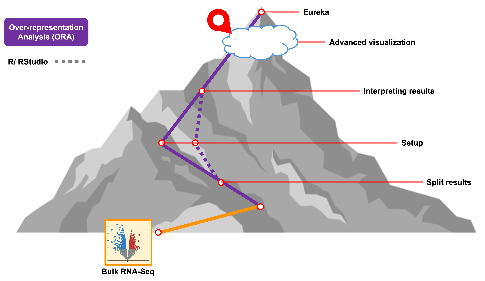
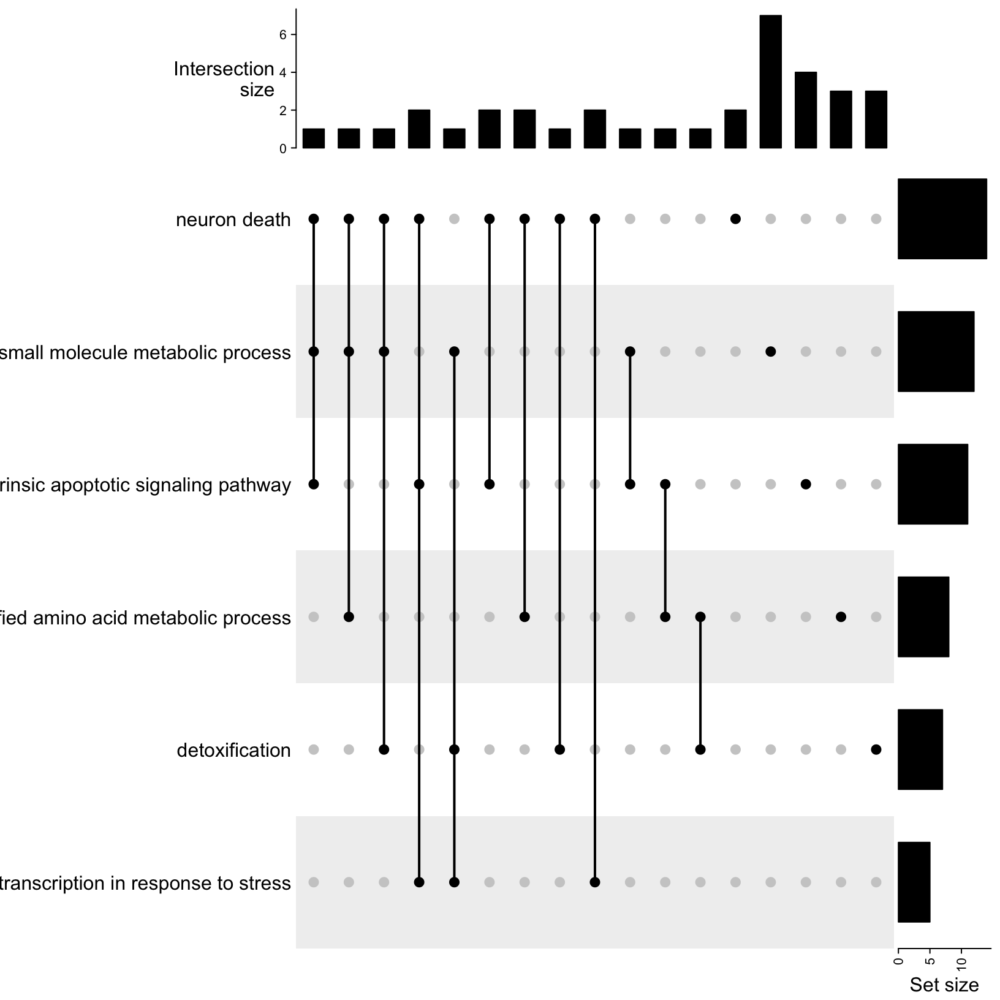
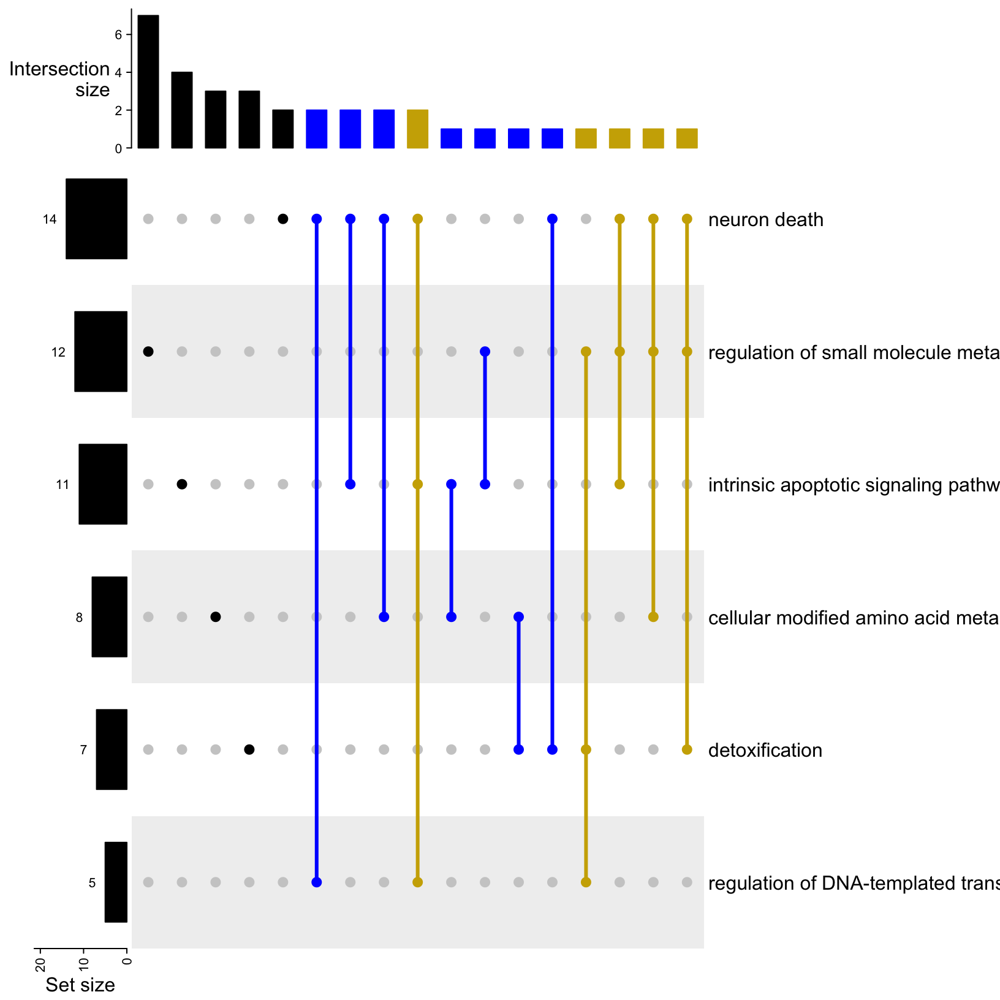
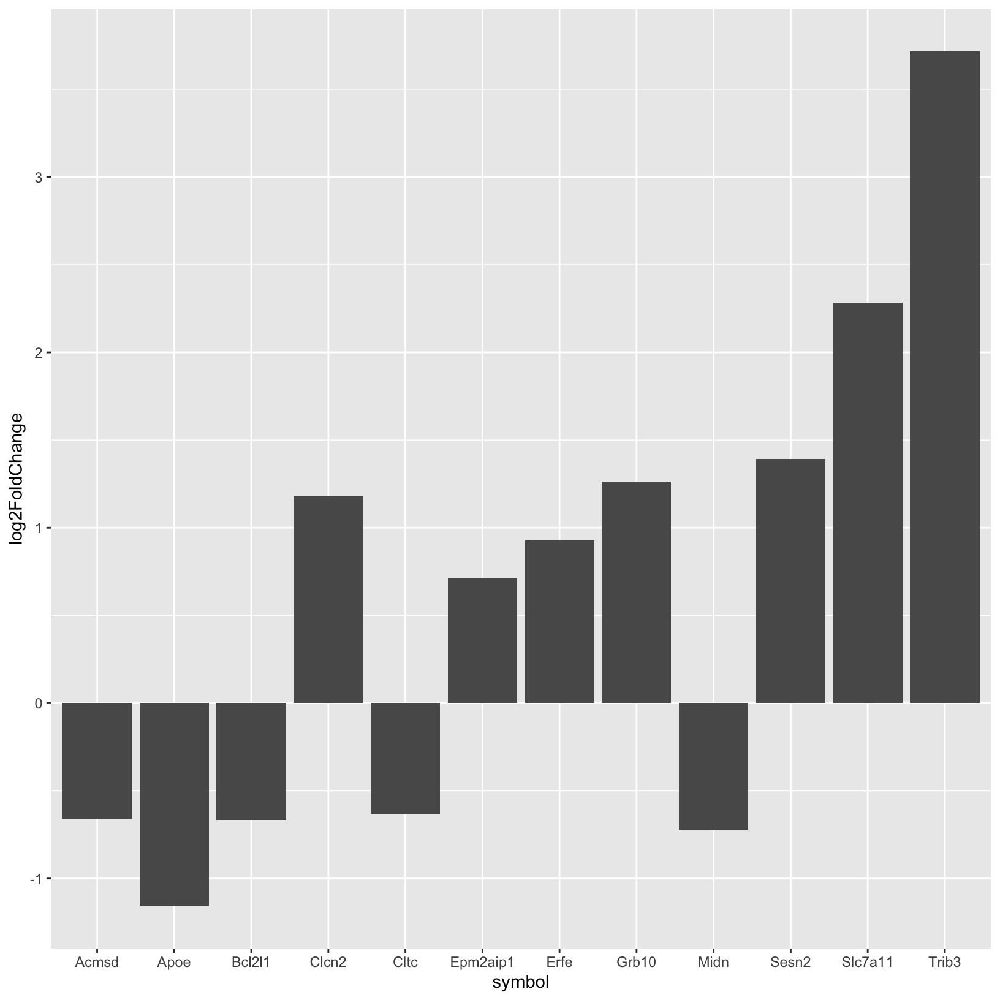
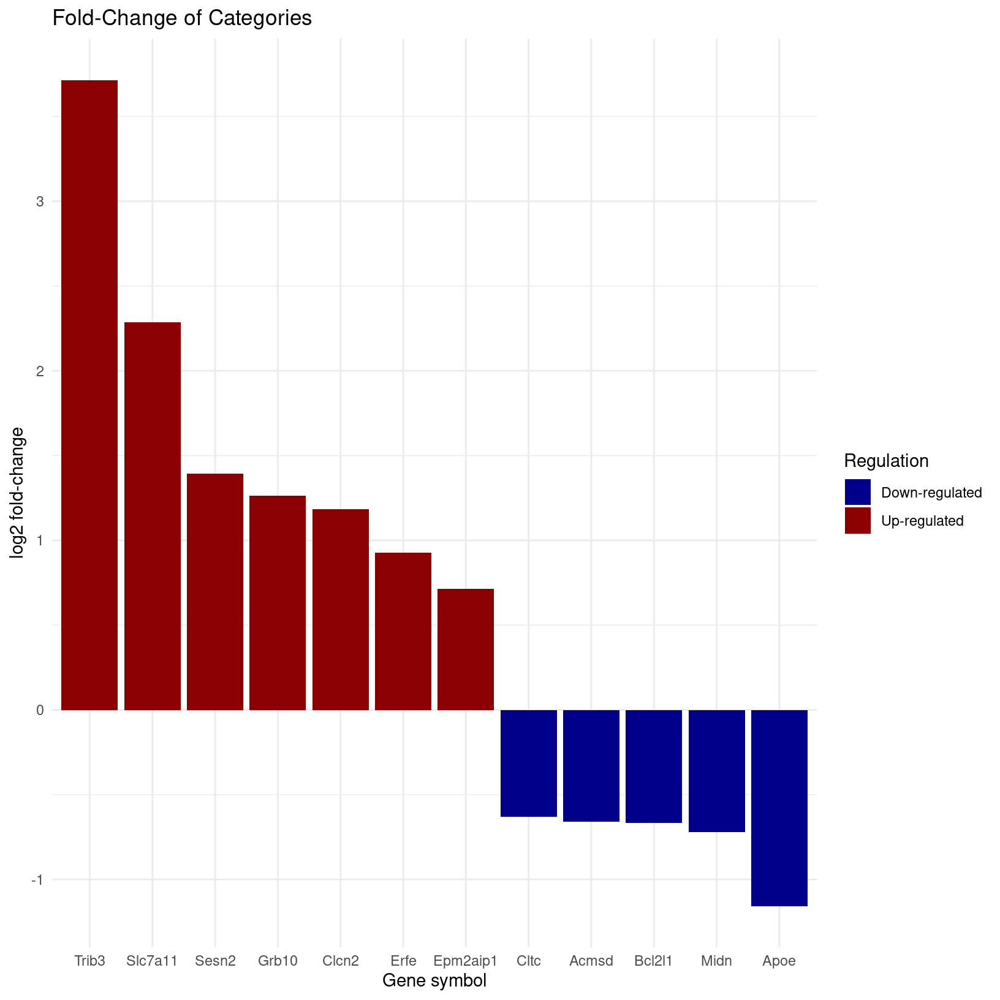

In this section, we’ll generate additional visualizations - beyond
what was generated by WebGestaltR - for our bulk RNA-seq
ORA results.
First, we’ll load a library called ComplexHeatmap that
we will be using for some of our visualizations in addition to the
plotting that is available to use from ggplot2 after
previously loading the tidyverse.
# -------------------------------------------------------------------------
# Load additional libraries
library(ComplexHeatmap)
# -------------------------------------------------------------------------
# Check current working directory
getwd()To create visualizations for the ORA enrichments, we’ll start by
reading in the table that WebGestaltR output to file.
# -------------------------------------------------------------------------
# Read in results
enriched_ora = read_delim('results/Project_deficient_vs_control_ORA_GO_BP/enrichment_results_deficient_vs_control_ORA_GO_BP.txt')Rows: 6 Columns: 11
── Column specification ────────────────────────────────────────────────────────────────────────────────────────────────────────────
Delimiter: "\t"
chr (5): geneSet, description, link, overlapId, userId
dbl (6): size, overlap, expect, enrichmentRatio, pValue, FDR
ℹ Use `spec()` to retrieve the full column specification for this data.
ℹ Specify the column types or set `show_col_types = FALSE` to quiet this message.head(enriched_ora)# A tibble: 6 × 11
geneSet description link size overlap expect enrichmentRatio pValue FDR overlapId userId
<chr> <chr> <chr> <dbl> <dbl> <dbl> <dbl> <dbl> <dbl> <chr> <chr>
1 GO:0070997 neuron death http… 263 14 3.73 3.76 1.98e-5 0.0157 11816;12… Apoe;…
2 GO:0098754 detoxification http… 77 7 1.09 6.41 1.03e-4 0.0314 11816;14… Apoe;…
3 GO:0062012 regulation of small molecule metabolic proc… http… 235 12 3.33 3.60 1.19e-4 0.0314 11816;12… Apoe;…
4 GO:0006575 cellular modified amino acid metabolic proc… http… 120 8 1.70 4.70 2.91e-4 0.0575 14381;14… Mthfd…
5 GO:0097193 intrinsic apoptotic signaling pathway http… 227 11 3.22 3.42 3.64e-4 0.0575 12048;12… Bcl2l…
6 GO:0043620 regulation of DNA-templated transcription i… http… 50 5 0.709 7.05 6.72e-4 0.0886 12608;13… Vegfa…In addition to the enrichment statistics, the table also includes a
column called userId that includes the names of the genes
that were both annotated for that GO term and part of the list of DE
genes of interest that we provided for the enrichment. Let’s pull out
those values and transform them into a structure that is more R
friendly.
# -------------------------------------------------------------------------
# create empty list
go_geneSets <- list()
# -------------------------------------------------------------------------
# create lists of overlapping DE genes for each GO term
for(i in 1:length(enriched_ora$description)){
go_name <- enriched_ora$description[i] # descriptive GO term names
go_genes <- str_split_1(enriched_ora$userId[i], ";") # list of gene symbols from table entry
go_geneSets[[go_name]] <- c(go_genes)
}
# -------------------------------------------------------------------------
# check the named lists
head(go_geneSets)$`neuron death`
[1] "Apoe" "Bcl2l1" "Vegfa" "Ddit3" "Slc7a11" "Trim2" "Coro1a" "G6pdx" "Mt1" "Egln1" "Jun" "Cebpb"
[13] "Hipk2" "Bnip3"
$detoxification
[1] "Apoe" "Sesn2" "Gsr" "Mt2" "Mt1" "Srxn1" "Hbb-bs"
$`regulation of small molecule metabolic process`
[1] "Apoe" "Bcl2l1" "Grb10" "Clcn2" "Acmsd" "Slc7a11" "Sesn2" "Trib3" "Midn" "Epm2aip1" "Cltc"
[12] "Erfe"
$`cellular modified amino acid metabolic process`
[1] "Mthfd2" "P4ha1" "Chac1" "Slc7a11" "Cth" "G6pdx" "Gsr" "Egln1"
$`intrinsic apoptotic signaling pathway`
[1] "Bcl2l1" "E2f2" "Cdkn1a" "Ddit3" "Stk25" "Chac1" "Nupr1" "Trib3" "Cebpb" "Hipk2" "Bnip3"
$`regulation of DNA-templated transcription in response to stress`
[1] "Vegfa" "Ddit3" "Sesn2" "Jun" "Cebpb"Now we have a list of the names of each GO term and then nested lists of the DE genes for each term.
Earlier, we saw that based on the DAG of GO terms in our initial
enrichment using the web-browser version of WebGestalt that
the “neuron death” and “intrinsic apoptotic signaling pathway” terms.
Let’s check what DE genes are shared between those two terms:
# -------------------------------------------------------------------------
# check what genes are shared between the two terms
intersect(go_geneSets$`neuron death`, go_geneSets$`intrinsic apoptotic signaling pathway`)[1] "Bcl2l1" "Ddit3" "Cebpb" "Hipk2" "Bnip3" We see that five genes are shared between the two terms out of the total set that are both annotated for each GO term and provided as DE genes of interest for the enrichment.
While comparing genes between two sets of genes is fairly
straightforward, if we wanted to understand how many genes are shared
versus unique across all the significant terms in our ORA enrichmemt
results using WebGestaltR this approach would be quite
tedious.
Instead we can opt for visualizations that use a broader type of set analysis. One option is something called an UpSet plot. Unlike that doesn’t limit the number of sets that can be compared, unlike more traditional approaches like Venn diagrams. With the Complex Heatmap package, we can use the named list as our starting point.
# -------------------------------------------------------------------------
# First make the combination matrix from our list of genes for each GO term
m = make_comb_mat(go_geneSets)
mA combination matrix with 6 sets and 17 combinations.
ranges of combination set size: c(1, 7).
mode for the combination size: distinct.
sets are on rows.
Top 8 combination sets are:
neuron death detoxification regulation of small molecule metabolic process cellular modified amino acid metabolic process intrinsic apoptotic signaling pathway regulation of DNA-templated transcription in response to stress code size
x 001000 7
x 000010 4
x 010000 3
x 000100 3
x x x 100011 2
x x 100100 2
x x 100010 2
x x 100001 2
Sets are:
set size
neuron death 14
detoxification 7
regulation of small molecule metabolic process 12
cellular modified amino acid metabolic process 8
intrinsic apoptotic signaling pathway 11
regulation of DNA-templated transcription in response to stress 5In the combination matrix results, we can see the total number of sets being compared and a representation of the overlaps. This is useful not as nice as something more visual.
Using the combination matrix, we can create a simple UpSet plot comparing the DE genes annotated for each GO term:
# -------------------------------------------------------------------------
# Make simple UpSet plot
UpSet(m)
Let’s breakdown the parts of this plot:
Now that we understand the parts of the plot, let’s make some adjustments to make the plot easier to read. You can use the same colors or pick your own from ggplots named options:
# -------------------------------------------------------------------------
# Make simple UpSet plot
upsetGO <- UpSet(m, comb_order = rev(order(comb_size(m))), lwd = 3,
comb_col = c("black", "blue", "gold3")[comb_degree(m)],
left_annotation = upset_left_annotation(m, add_numbers = TRUE))
upsetGO
Now we have the GO term dots connected with a thicker line to indicate the combination and a color designated for each degree of intersection (black = unique, blue = shared by two terms, gold = shared by three terms). We also have the intersections sorted by size and the set size bar moved to the left with the values added.
Question: What term has the fewest unique associated genes? Which term has the most?
Note - This is just a fraction of all the possible customizations that are available via the ComplexHeatmap package but for the sake of time, we’ll limit our plot adjustments to this, at least for now.
Let’s output our customized UpSet plot to file:
# -------------------------------------------------------------------------
# Output UpSet plot to file
png(file = "./results/figures/deficient_vs_control_GO-BP_UpSetPlot.png", width = 1000, height = 400)
draw(upsetGO) # draw the plot
dev.off() # Close the graphics devicepng
2 We only have a single comparison between deficient and control conditions for our bulk results, but for experiments that have more than one comparison we can also use these approaches to compare what GO terms are shared/unique between different DE comparisons instead of comparing what genes are unique/shared.
Since ORA does not account for the fold-change size or direction, we can combine our enrichment results with our DE statistics to summarize the gene expression for terms of interest.
# -------------------------------------------------------------------------
# If not already loaded, read in diffex results
rsd_diffex = read_csv('inputs/bulk_de_results/de_deficient_vs_control_annotated.csv')Rows: 16249 Columns: 9
── Column specification ────────────────────────────────────────────────────────────────────────────────────────────────────────────
Delimiter: ","
chr (3): id, symbol, call
dbl (6): baseMean, log2FoldChange, lfcSE, stat, pvalue, padj
ℹ Use `spec()` to retrieve the full column specification for this data.
ℹ Specify the column types or set `show_col_types = FALSE` to quiet this message.# -------------------------------------------------------------------------
# Take another look at our DE table
head(rsd_diffex)# A tibble: 6 × 9
id symbol baseMean log2FoldChange lfcSE stat pvalue padj call
<chr> <chr> <dbl> <dbl> <dbl> <dbl> <dbl> <dbl> <chr>
1 ENSMUSG00000000001 Gnai3 1490. 0.278 0.148 1.88 0.0605 0.325 NS
2 ENSMUSG00000000028 Cdc45 1749. 0.222 0.129 1.72 0.0853 0.386 NS
3 ENSMUSG00000000031 H19 2152. 0.136 0.284 0.478 0.633 0.867 NS
4 ENSMUSG00000000037 Scml2 24.9 0.600 0.562 1.07 0.286 NA NS
5 ENSMUSG00000000049 Apoh 7.78 -1.23 1.15 -1.07 0.285 NA NS
6 ENSMUSG00000000056 Narf 19654. -0.201 0.167 -1.20 0.229 0.596 NS To visualize the expression for genes annotated as part of
small molecule metabolism, which might be interesting since
the treatment was a difference in diet, we’ll need to subset our results
to the DE genes of interest for that term.
# -------------------------------------------------------------------------
# Subset RSD table to genes that match those in our list for the GO term of interest
rsd_smallmolecule <- rsd_diffex %>% filter(symbol %in% go_geneSets$`regulation of small molecule metabolic process`)
head(rsd_smallmolecule)# A tibble: 6 × 9
id symbol baseMean log2FoldChange lfcSE stat pvalue padj call
<chr> <chr> <dbl> <dbl> <dbl> <dbl> <dbl> <dbl> <chr>
1 ENSMUSG00000002985 Apoe 157. -1.16 0.345 -3.35 8.14e- 4 0.0329 Down
2 ENSMUSG00000007659 Bcl2l1 21934. -0.668 0.209 -3.19 1.40e- 3 0.0459 Down
3 ENSMUSG00000020176 Grb10 3086. 1.26 0.240 5.27 1.38e- 7 0.0000662 Up
4 ENSMUSG00000022843 Clcn2 1016. 1.18 0.201 5.90 3.74e- 9 0.00000374 Up
5 ENSMUSG00000026348 Acmsd 1203. -0.658 0.200 -3.30 9.66e- 4 0.0362 Down
6 ENSMUSG00000027737 Slc7a11 119. 2.28 0.367 6.23 4.78e-10 0.000000561 Up Let’s start by using the subsetted table to create a simple barplot of the fold-change values for each gene:
# -------------------------------------------------------------------------
# Simple barplot of fold-changes
ggplot(rsd_smallmolecule, aes(x = symbol, y = log2FoldChange)) +
geom_col()
This is helpful but could be improved with some formatting adjustments and labels. Let’s do that next:
# -------------------------------------------------------------------------
# Create a more sophisticated barplot of fold-changes
rsd_smallmolecule_barplot <- ggplot(rsd_smallmolecule, aes(x = reorder(symbol, -log2FoldChange), y = log2FoldChange, fill = log2FoldChange > 0)) +
geom_col() +
labs(
title = "Fold-Change of Categories",
x = "Gene symbol",
y = "log2 fold-change"
) +
scale_fill_manual(values = c("TRUE" = "darkred", "FALSE" = "darkblue"),
labels = c("Down-regulated", "Up-regulated"),
name = "Regulation") +
theme_minimal()
rsd_smallmolecule_barplot
Now we can see we see that the genes order by their fold-change values
from our DE results and colored by their status (Up- vs Down-
regulated).
Does anything jump out about these results? Are you surprised that some genes are upregulated but other genes in the same term are down regulated?
Let’s also write this out to file:
# -------------------------------------------------------------------------
# Output the barplot to file
png(file = "./results/figures/deficient_vs_control_fold-changes_regulation-of-small-molecule-metabolic-process.png", width = 800, height = 500, res = 100)
rsd_smallmolecule_barplot
dev.off() # Remember to close the graphics devicepng
2 To ensure that we don’t leave objects in our environment that will slow down our log-in and session load time tomorrow morning, let’s clear our environment and re-start our R session now.
# -------------------------------------------------------------------------
# Load primary libraries
library(WebGestaltR)
library(tidyverse)
setwd("~/IFUN_R/")
…
| Previous lesson | Top of this lesson | Next lesson |
|---|